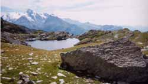

lac du Retour (2400 m)

Départ : Putétruit - la Rosière (1820 m)
Aller : 3,5 km, +657 et - 38 m, 122 min
Retour : 3,5 km, + 38 et - 657 m, 97 min
Difficulté : E
Période : août - septembre
Remarque : en juillet, le lac est souvent peu apparent (c’est alors dommage).
Bibliographie : Mérel (page 203)
Un sentier bien marqué descend, traverse le torrent et remonte au Passage du Retour (lacets raides sur la fin).
Il est possible de revenir par le passage de la Louie Blanche, mais la traversée vers ce passage, bien que balisée, escalade de gros blocs rocheux assez fastidieux. La descente du passage traverse une pente très raide qui ne doit pas être recouverte de neige.